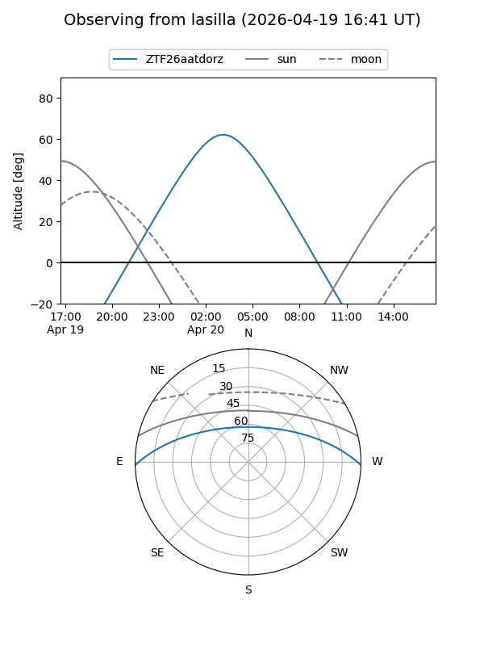
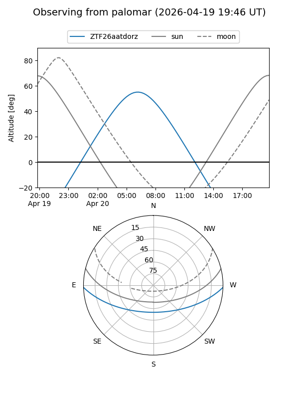

ZTF26aatdorz
Target ZTF26aatdorz at 2026-04-20 08:36
Aliases and brokers:
FINK: link
Lasair: link
ALeRCE: link
alt names
ZTF26aatdorz (ztf,fink_ztf)
Coordinates:
equatorial (ra, dec) = 183.7349,-1.30865
equatorial (HMS+DMS) = 12:14:56.36,-01:18:31.15
galactic (l, b) = (284.3071,+60.23661)
Flags:
Photometry:
last ztfg=19.54
1 ztfg detections
Lightcurve
Visibility


Additional plots